CMSC 412
Class 10
February 29, 1996 There are 13 slides in this lecture.
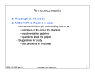
 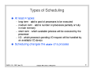
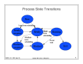
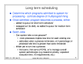
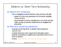
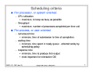
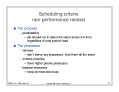
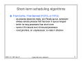
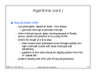
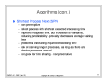
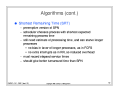
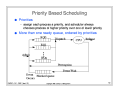
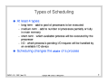
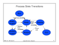
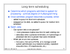
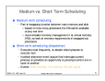
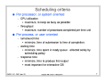
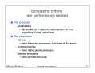
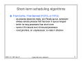
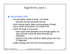
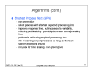
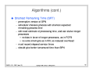
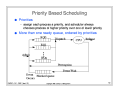
Click here to go back.
You can also download the PostScript file for these slides by clicking on one of the following:
You can also download the Gzipped PostScript and PDF files for these slides.
Copyright 1996 Jeffrey K. Hollingsworth. All rights reserved.